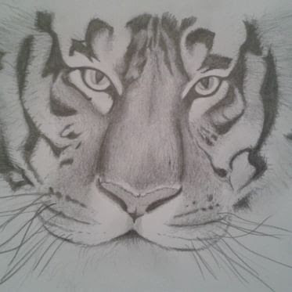
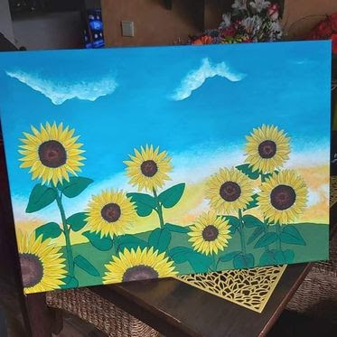
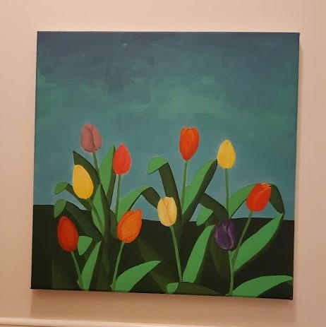
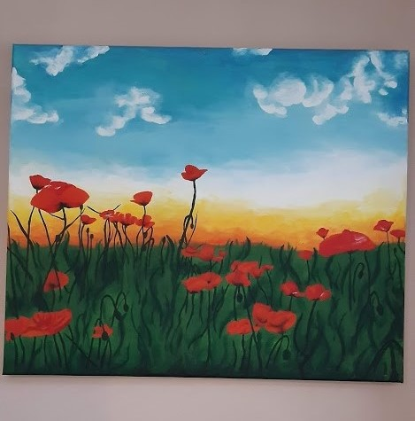
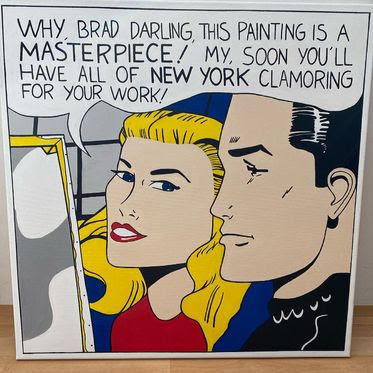
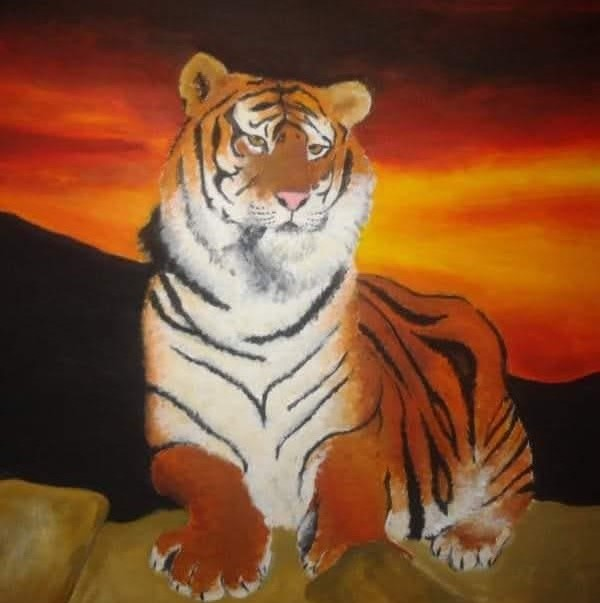

Maluju si
Od malička si pořád něco maluju, čmárám a tvořím. Ať už jde o něco důležitějšího jako obraz na plátně či jen nadpis v sešitě nebo tvář nějaké ženy v časopise. Posledních pár let jsem se věnovala hlavně dětem a na tvoření nezbylo tolik času, přesto jsem ale pár obrazů namalovala. Níže můžete vidět pár mých prací. Některé jsou z dob "kdysi dávno" a jiné zas z období posledních dvou let.
     